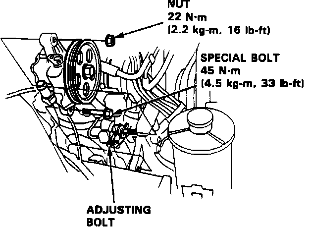

Power Steering Pump: Service and Repair
Fig. 35 Power Steering Pump Replacement:

1. Drain power steering fluid.
2. Remove air cleaner cover and air duct.
3. Disconnect and plug pump inlet and outlet hoses.
4. Remove power steering belt.
5. Remove pump attaching bolts, then remove, Fig. 35.
6. Reverse procedure to install.